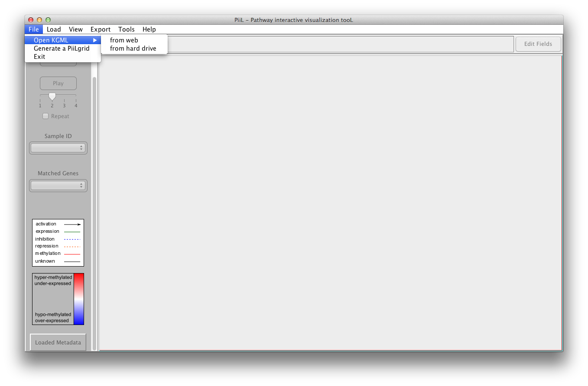
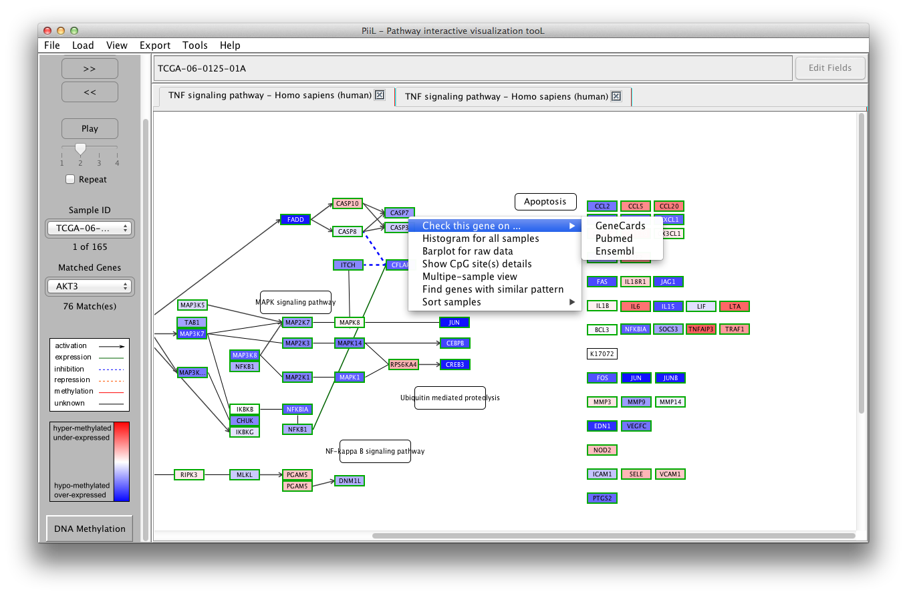
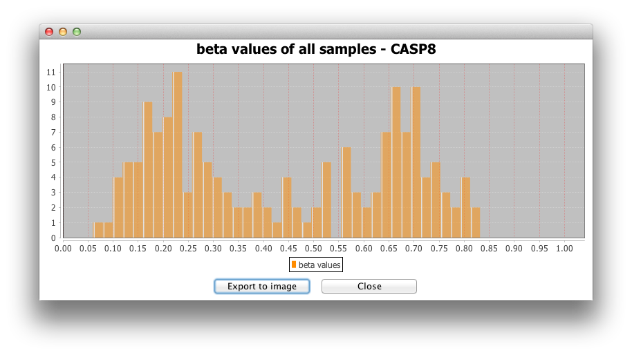

Run PiiL
Open a KGML file
Load methylation data
Select a subset of CpG sites
Load expression data
Load samples information
Navigate through samples
Right-click menu options
Multiple-sample view
Group-wise view
Generate a PiiLgrid
Highlight a set of genes in a pathway
Export pathway to image
Export list of matched genes in each pathway
Duplicate the current pathway in a new tab
Cite us
Decode the name "PiiL"
Get the latest version of PiiL, together with some data for
testing, from here.
Unzip the downloaded file. To run PiiL on Mac just double-click on
the .jar file. For Windows and Linux platforms, open a terminal,
go to the directory that you have the .jar file and run "java
-Xmx4096m -jar PiiL-vx.xx.jar".
There are two options to open a KGML file:
1) Open it by selecting the pathway and organism name from the
KEGG database. This will download the file and for the next time
will use the downloaded file.
2) Open an already downloaded KGML file from your hard drive.
By typing in the boxes labeled as 'Search', the comboboxes list
only the pathways / organisms that contain the string typed in the
box.
After opening a pathway, you can load your meta-data over that
pathway. The CpG IDs - if the data comes from a methylation array
- or CpG positions -if the data is from whole genome bisulphite
sequencing - need to be replaced with their annotated gene name.
Any other information (for example the CpG ID or its genomic
region) can come after an underscore in the first column. A script
to convert the data into this format is available here. The
first row lists the samples IDs. The beta values must be between
0 and 1.
A valid input file looks like the following (the column separator
is selectable):
| sampleIDS |
sample1
|
sample2
|
...
|
sampleN |
| TLR2[_cg00000884_chr4:154609857_intronic] |
beta_value |
beta_value | ... |
beta_value |
| ELOVL1[_cg00001446_chr1:43831041_exonic] |
beta_value | beta_value | ... |
beta_value |
| ... |
... |
... |
... |
... |
| ROCK2[_cg00001594_chr2:11484705_UTR5] |
beta_value |
beta_value |
... |
beta_value |
To load the methylation data, click on New under Load
->
Methylation. Once a methylation data file is
loaded, it will be listed under the Load -> Methylation
menu to be used for other pathways directly.
Customization of the input file is possible via a window that
emerges after selecting a file. If the file has been converted
with PiiLer you can just press OK.
The genes in the input file that match with the genes in the
pathway are colored according to their beta values. Blue color
codes the hypo-methylation status (the closer the beta value is to
zero the color is darker blue) and red color codes the
hyper-methylation status (the closer the beta value is to 1 the
color is darker red).
The samples IDs are listed in the first combobox and the matched
genes are listed in the second combobox where the number of
matches is shown by the label below it.
PiiL provides four options to select a subset of all CpG sites that hit each gene, available at Tools -> Select a subset of CpG sites. When these subselection is applied, the genes with no CpG passing the criteria are colored in light gray.
1) Selecting sites by standard deviation filtering: This option aims to filter out the CpG sites that have very little variation over all samples according to an adjustable threshold for the standard deviation of the beta values for a site over all samples. This option facilitates the visibility of the sites that differ significantly between the samples; where there are multiple CpG sites hitting a gene that do not vary significantly between the samples and averaging them for color-coding a gene the strong signal is weakened.
2) Selecting sites by genomic region name: If the CpG sites are annotated with a genomic region, the user can select specific sites, for example the ones that are intronic, exonic, UTR5 and so on.
3) Selecting sites by their beta values: includes the sites based on user defined ranges for beta-values.
4) Loading a list of pre-selected sites: a list of pre-selected CpG sites can be loaded and the sites that do not exist on the list will be excluded.
Genes and their expression values (FPKM) are the second type of
meta-data that you can load on your pathway of interest. Make
sure the input file has the sample IDs on the first row and gene
names on the first column. For each gene, the expression
values appear on its following columns.
A valid input file looks like the following (the column separator
is selectable):
| sampleIDS
|
sample1
|
sample2
|
...
|
sampleN |
| GeneA |
expression_value |
expression_value | ... |
expression_value |
| GeneB |
expression_value | expression_value | ... |
expression_value |
| ... |
... |
... |
... |
... |
| GeneX |
expression_value | expression_value | ... |
expression_value |
To load the gene expression data, click on New under Load
->
Gene Expression. Once a gene expression data
file is loaded, it will be listed under the Load -> Gene
expression menu to be used for other pathways directly.
The genes in the input file that match with the genes in the
pathway are color-coded according to the k-fold difference between
their expression level and the median expression of all the
samples. The samples IDs are listed in the first combobox and the
matched genes are listed in the second combobox where the number
of matches is shown by the label below it.
If the samples in the loaded meta-data files have additional
information like gender, age, ethnicity, disease stage and so on,
you can load the file with matched sample IDs and the additional
data will be shown for each sample.
Samples information can be loaded from Load -> Samples
information menu, by choosing New or a previously
loaded samples information file. In the form that shows up after
selecting the input file, you can change the default choices for
the 'columns separator' and the column containing sample IDs.
If the samples are from TCGA data sets, check the related checkbox
for special matching according to TCGA sample barcodes.
When the meta data is loaded you can navigate through samples
using the buttons on the left side panel to see the status of the
genes in the pathway for each sample. The 'Play' button shows the
samples consecutively. If the 'Repeat' checkbox is checked the
playback is repeated from the beginning when the last sample is
shown. The speed of playback can be set using the slider. A short
explanation (tooltip) is shown when hovering and staying over side
panel items with the mouse.
A menu is available for all the genes when you right-click on the
gene rectangle, with the following options:
1) Check this gene on ... : The first option is enabled for all the genes. This opens a tab in the default browser and checks the target gene's information on your selected database: GeneCards, Pubmed or Ensemble.
2) Histogram for all samples:
The second option makes a histogram for the beta-values or
expression values of all samples for the targeted gene.

3) Barplot for raw data is another
representation of beta-values or expression values for all
samples.
Having loaded the samples information file, the values of
methylation/expression of each gene can be shown in a group-wise
manner. Samples can be grouped by one of the columns of the
samples information file. To see the pathway in Group-wise view
select View -> Group-wise view for all/selected genes.
To go back to Single-sample view, select View
-> Show single-sample view for all genes.
The grouping shows the average methylation/expression over the
samples belonging to each group. The samples grouping is
summarized with the name of each group and number of samples in
that group in the parenthesis.
For the expression data, there are two options:
1) comparing the average expression value of the samples of each
group to the average of all samples.
2) comparing the average expression value of the samples of each
group, with the average of the samples belonging to a group chosen
as the 'base group'.


Sometimes most of genes we are interested in are not part of any
of the KEGG pathways. In this scenario, PiiL provides a grid of
not connected genes called PiiLgrid where all the
functionalities of PiiL are applicable. A PiiLgrid can be
generated either via File -> Generate a
PiiLgrid or out of selected genes listed in the "Find genes with similar pattern" form.
In the first case, the input file is a text file with the name of
each gene on each row.
If you have a list of genes and want to check the overlap of this
list with a pathway of interest, first open the pathway and then
select Load -> List of genes to load your
file. The genes that exist in the targeted pathway will be
highlighted with a red text and red border.

Look at the logo carefully. Do you recognize a cute elephant
there?! Piil (pronounced as meal) means elephant in Persian (with
Sanskrit origin). And on a chess board the chessman called bishop
is actually a piil (elephant) standing next to a hosrse
(knight)!